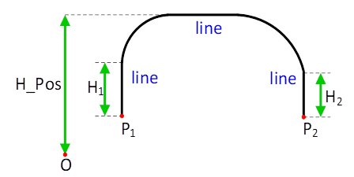

|
类型 |
机械手运动指令（主要针对delta、码垛机械手，非scara） |
|
描述 |
直线拱形运动（也称蛙跳指令）；机械手末端拱形方式蛙跳一定高度再下降到目标点。如下图所示，直线拱形是由三段直线轨迹形成的运动指令。该机械手指令对base设置的虚拟轴有效。 |
|
语法 |
MOVER2_ARCHPL(H_Pos,H1,H2,Fstatus,End_Pos1,End_Pos2,End_Pos3,End4,...) H_Pos：虚拟轴第3轴蛙跳的最大高度坐标值，即第3轴的绝对位置（如Z轴）；单位mm H1：虚拟轴第3轴从起始点的提升高度；单位：mm H2：虚拟轴第3轴到目标点的下降高度；单位：mm Fstatus：若是SCARA，则是左右手系，0表示右手系，1表示左手系；若是六轴，表示确定唯一解的类型值，取值范围0~7。-1表示当前的姿态。 End_Pos1：机械手虚拟轴的第1轴目标值（如X轴）；单位：mm End_Pos2：机械手虚拟轴的第2轴目标值（如Y轴）；单位：mm End_Pos3：机械手虚拟轴的第3轴目标值（如Z轴）；单位：mm End4：若是六轴机械手，表示目标点姿态的欧拉角RX角；若是SCARA，表示直线目标点姿态的Rx轴旋转角。单位：度 End5：若是六自由度机械手，需填写该值，表示直线目标点姿态的欧拉角RY角；而SCARA不需填写。单位：度 End6：若是六自由度机械手，需填写该值，表示直线目标点姿态的欧拉角RZ角；而SCARA不需填写。单位：度 若后面End7、End8、End9等继续添加的参数，则为外扩轴的目标值，量纲单位根据用户设置的情况，可设置为旋转轴（单位：度）或移动轴（单位：mm）。
 备注： 1）拱形运动两边的提升高度是由H1和H2确定的，与ZSMOOTH无关。拱形运动倒角的曲线形态会随着各关节最大加速度设置的不同，会有些变化。 2）对于frame102的两轴并联机械手，只有2维坐标值，只设置End_Pos1和End_Pos2，H1和H2设置为0，H_Pos和P1、P2高度一致。 |
|
适用控制器 |
4系列20170511以上固件支持 |
|
例程 |
BASE(6,7,8,9) '选择虚拟轴号 CONNREFRAME(1,0,0,1,2,3) '启动正解连接。 WAIT LOADED '等待运动加载，此时会自动调整虚拟轴的位置。 ?"正解模式"
BASE(6,7,8,9) MOVER2_PABS(0, 300, -100, -50,0) ‘右手系下PTP运行到目标点300,-100,-50 MOVER2_ARCHPLABS(-25, 10, 20, 0, 300, -400, -50, 0) ‘右手系下，拱形运行的Z轴方向最高位置限制在-25mm，从起点Z轴提升高度10mm，Z轴下降高度20到目标点位置300,-400,-50。 |
|
相关指令 |
MOVER2_ARCHP、MOVER2_ARCHP3 |